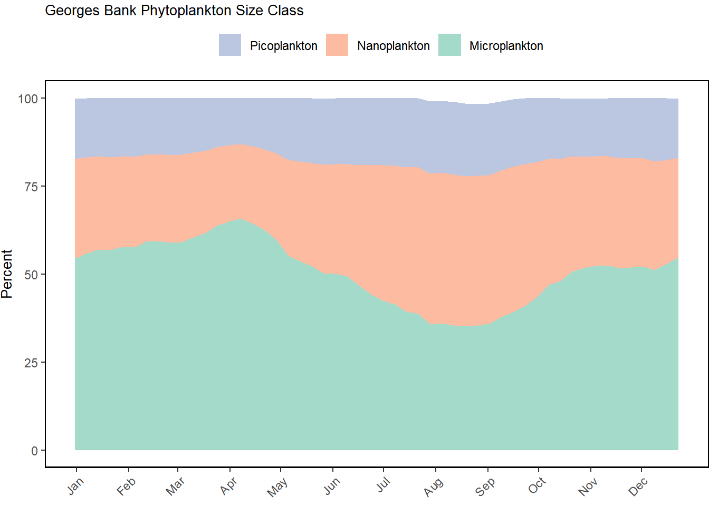
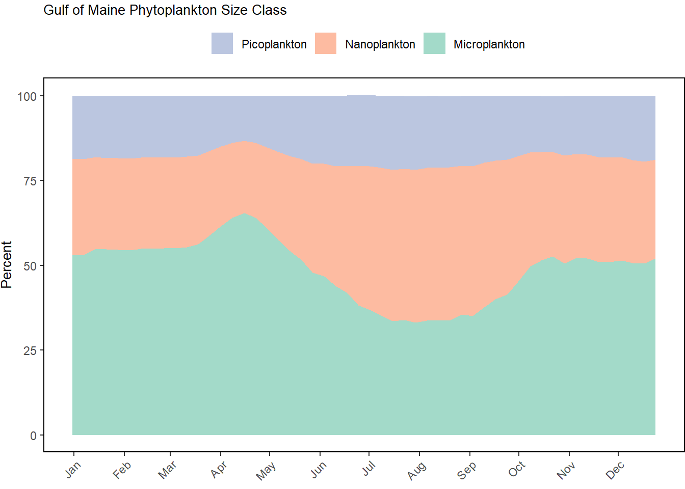
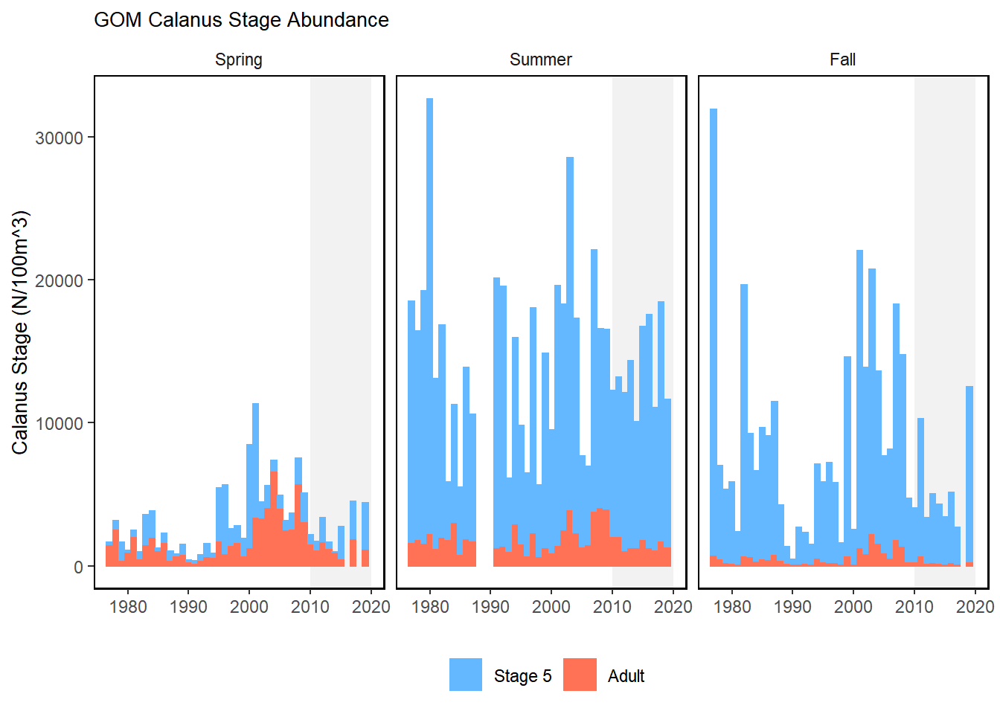
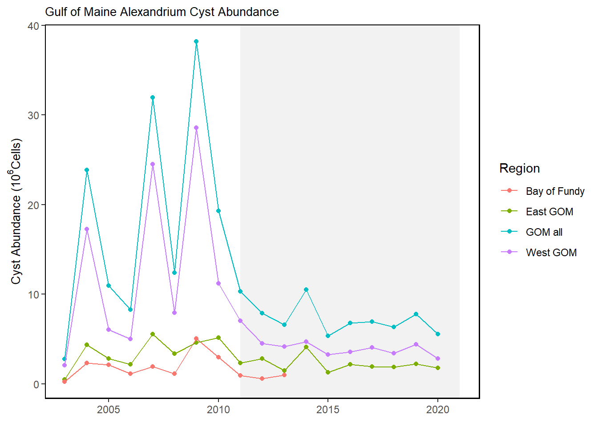
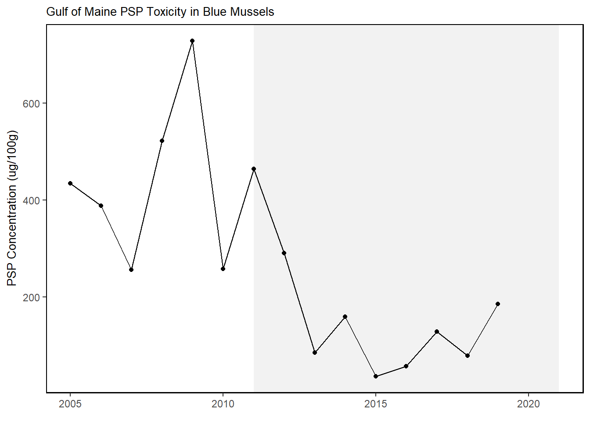

Trend lines are shown when slope is significantly different from 0 at the p < 0.05 level. An orange line signifies an overall positive trend, and purple signifies a negative trend. Note that in the final report we will only test for trend when N >= 30. However, I have relaxed that requirement for the purposes of this document so that trends are highlighted when N >= 20. This means that some trends shown here will not be present in the final document. Dashed lines represent mean values of time series unless the indicator is an anomaly, in which case the dashed line is equal to 0. Shaded regions indicate the past ten years. If there are no new data for 2018, the shaded region will still cover this time period.
Gulf of Maine & Georges Bank
Ocean Temperature
GOM Slopewater Proportions
Chlorophyll and Primary Productivity
Seasonal chlorophyll a & primary production
Phytoplankton Size Class


Zooplankton
Euphausiids + Cnidarians
NO NEW DATA
Small and Large Calanoid stratified abundance
NO NEW DATA
Abundance anomaly
Calanus Stage
NO NEW DATA

Zooplankton Diversity
NO NEW DATA
HABs
Alexandrium
 
PSP
